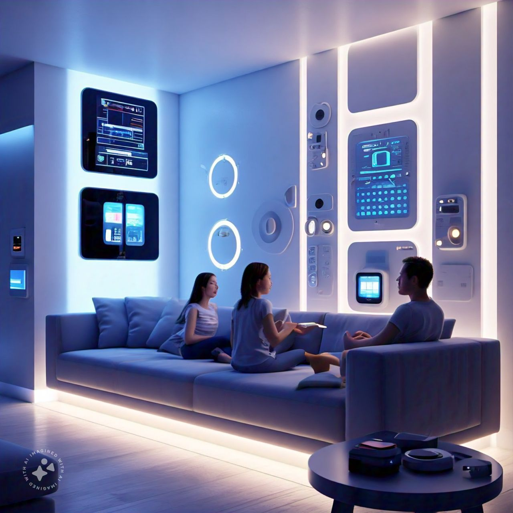

Smart Homes: The Future of Automation
Smart homes are transforming the way we interact with our living spaces. Through the integration of IoT (Internet of Things) devices and automation systems, everyday tasks are becoming easier, more efficient, and more personalized.
Key Components of a Smart Home
- Smart Lighting: Automate lighting based on time of day or occupancy, improving energy efficiency.
- Voice Assistants: Devices like Amazon Alexa or Google Assistant allow users to control smart devices through voice commands.
- Home Security: Smart cameras, doorbell systems, and motion sensors that offer real-time monitoring and alerts.
- Smart Thermostats: Devices like Nest optimize heating and cooling systems, reducing energy usage and costs.
The Role of IoT in Smart Homes
The Internet of Things (IoT) is the backbone of smart homes, enabling devices to connect and communicate with one another. This seamless connectivity allows for enhanced automation, such as adjusting the thermostat based on occupancy or turning off lights when a room is empty.
Programming Example: Creating a Smart Light Control System
# Python code for controlling smart lights using IoT
import time# SmartLight class for simulating light control
class SmartLight: def __init__(self, status='off'): self.status = status def turn_on(self): self.status = 'on' print("Light is now ON") def turn_off(self): self.status = 'off' print("Light is now OFF") def toggle(self): if self.status == 'off': self.turn_on() else: self.turn_off()# Example usage
light = SmartLight() light.toggle() # Turn on the light time.sleep(2) light.toggle() # Turn off the lightChallenges of Smart Homes
While smart homes offer significant advantages, they come with their own set of challenges, such as concerns about privacy, security, and the complexity of managing multiple devices from different manufacturers.
Further Reading
Learn more about smart home technologies and their impact on modern living: